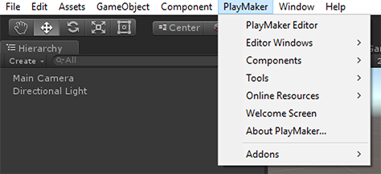

Opens the main editor window.
NOTE: Other Editor Windows are only available after the main editor window is open.
Editor Windows
Browser to quickly select FSMs.
Browser to quickly select States.
Select and edit FSM Templates.
Context sensitive editing tools.
Preview and add Actions.
View and edit Global Variables.
View and edit FSM Events.
Shows runtime State changes in a visual timeline.
View an FSM's runtime log.
View Playmaker Editor info.
Components
Adds PlayMakerFSM components to selected GameObjects.
Adds a GameObject with a PlayMakerGUI component to the scene.
Tools
Loads all prefabs in the project that have a PlayMakerFSM component.
A wizard that helps you builds the framework for a custom action.
Export the PlayMakerGlobals asset.
Import a previously exported PlayMakerGlobals asset.
A tool that batch exports action screenshots and generates action html for the wiki.
Run AutoUpdater
The AutoUpdater will try to fix upgrade problems. Normally it will run automatically, but you can run it manually from here.
A tool that submits a bug report or feature request to our online fogbugz account.
Update All Loaded FSMs
After updating to a new version of Playmaker sometimes it is necessary to update saved data. Normally this should happen automatically, but if this tool lets you perform the update manually if necessary.
Update All FSMs In Build
After updating to a new version of Playmaker sometimes it is necessary to update saved data. Normally this should happen automatically, but if this tool lets you perform the update manually if necessary. This tool will load all scenes in Build Settings and update any FSMs in those scenes.
Online Resources
Links to useful online resources.
Welcome Screen
See Installation.
About Playmaker
Installed version info and credits.
Add-ons
Optional add-ons for Playmaker.
NOTE: If you don't see the Playmaker menu check for errors in the Unity Console. Script errors in the project can prevent Unity from compiling Playmaker scripts.